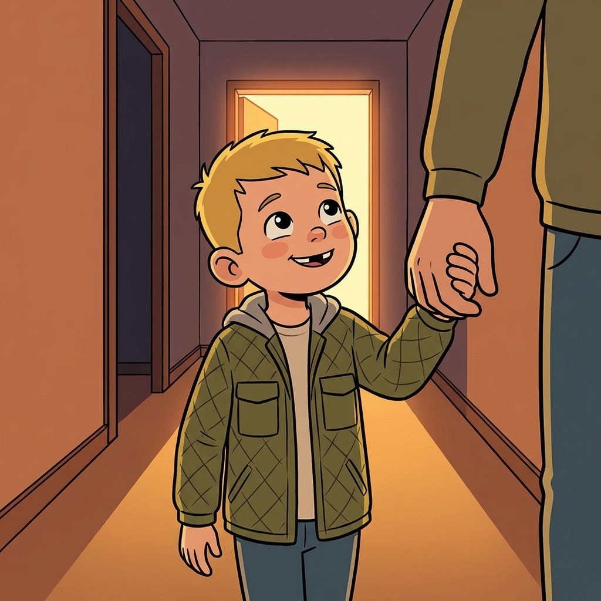
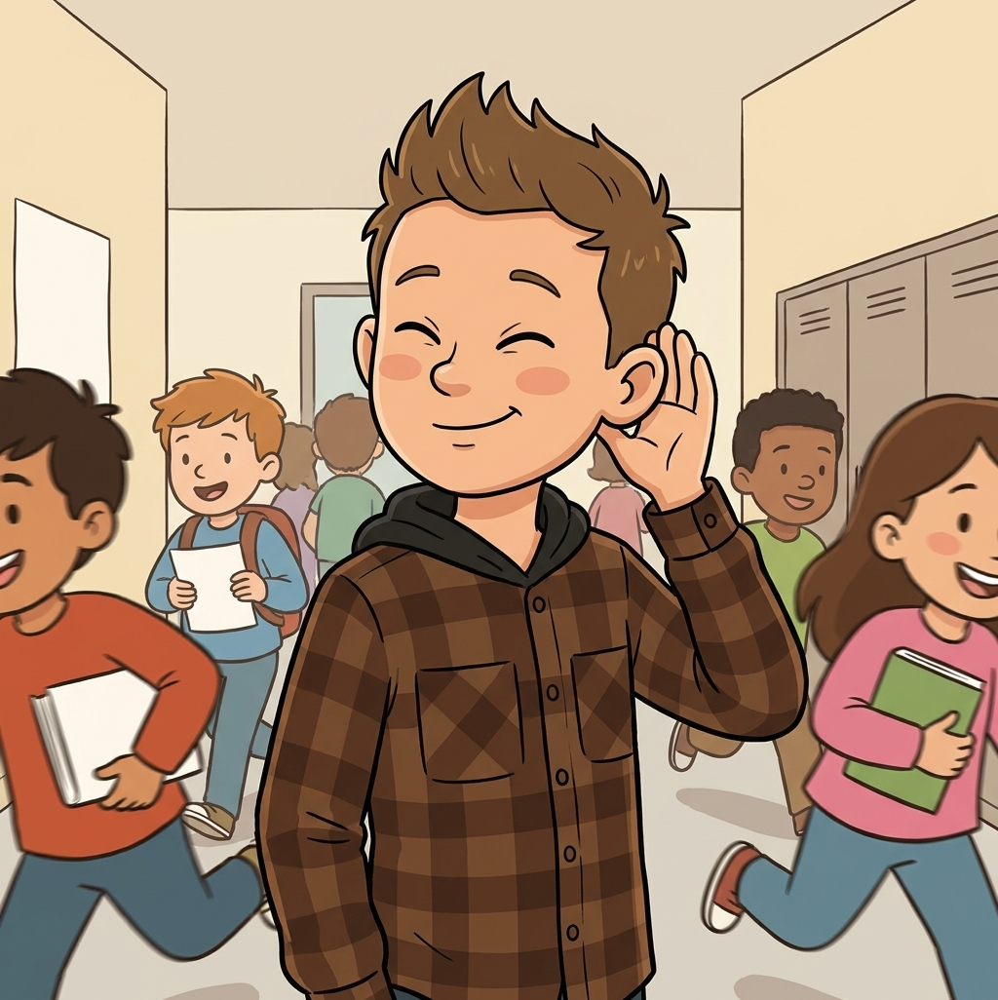
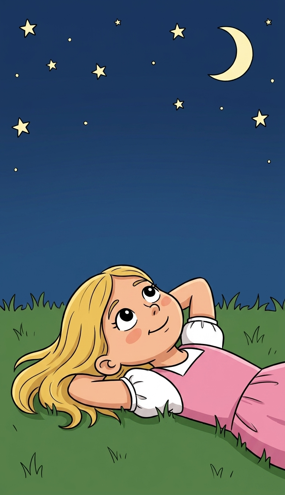
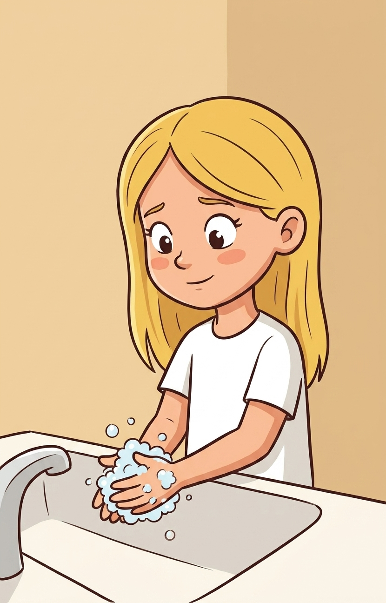
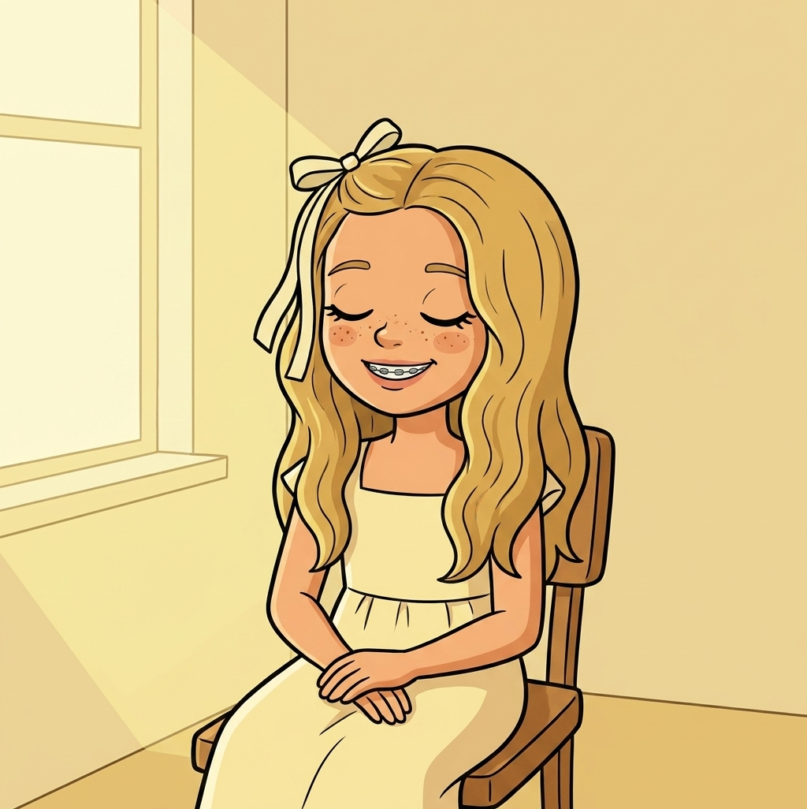
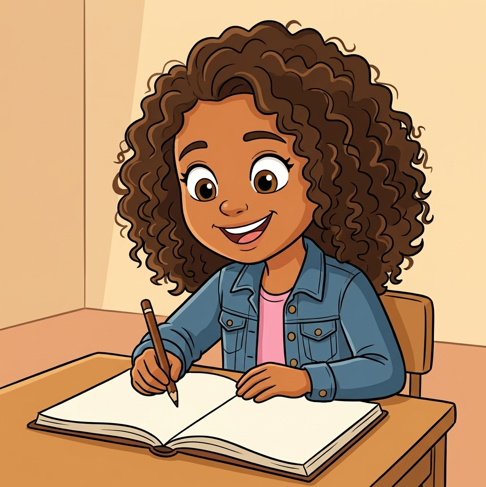

The Lord Is My Shepherd
Psalms 1–2; 8; 19–33; 40; 46 · August 23, 2026
Every other week this year we have read a story. This week there is no story. This week is the songbook, and the most famous song in it was written by a boy who used to smell like sheep.
A king could have written about thrones or armies. He wrote about sheep.
Last week, quickly
~2 minWarm-up: Two questions about Job. Tap the one you think is right.
A book with no story in it
~4 minPsalms is the Bible's songbook. One hundred fifty songs, collected over hundreds of years. They were written to be sung out loud with instruments, and the tunes are all lost. We only have the words.
Ask the class: what is a song you know by heart? Why do people sing when they are happy, and also sing when they are sad?
Abandoned. Guilty. Rescued. So happy you cannot sit down. All four are in the same book, and sometimes on the same page.
That is the point worth landing. God is not only interested in your good days. There is a psalm for the bad ones and He kept those too.
The shepherd boy grew up
~5 minYou already know this kid. Back in June we met him: the youngest of eight brothers, out with the sheep while everybody else got looked at, the one the Lord picked because the Lord looketh on the heart. Then the sling, then the giant.
Before any of that, his job was keeping sheep alive. Finding water. Finding grass. Chasing off a lion and a bear. Carrying the hurt ones. Counting them every single night.

Then he became king of the whole nation. And when King David sat down to write about God, out of every picture he could have used, he reached for the one job he knew best.
"The Lord is my shepherd; I shall not want."
Not "a shepherd." My shepherd. A shepherd with a whole flock still knows which one is yours.
Psalm 23, one line at a time
~9 minSix verses. Tap each line and walk the psalm end to end. Do not rush verse four.
Six verses, and four of them are about being taken care of by somebody who knows what he is doing. One is about a dark valley. And the last word is forever.
David wrote this after he had been hunted, betrayed by his own son, and had wrecked things badly himself. He is not saying life is gentle. He is saying he knows who is walking with him.



The shepherd's voice
~5 minSheep are not smart, but they are very good at one thing: they know their own shepherd's voice. A stranger can stand in the same field and call them and they will not move.
Find the shepherd
Nothing to bring. This works with an empty classroom and six kids.
How it runs
- Pick one kid to be the shepherd. Send them to the far side of the room.
- Everybody else is a sheep. Eyes closed, no peeking.
- The shepherd calls the sheep by name, quietly, one at a time. Each sheep walks toward the voice with eyes still shut.
- Round two: pick a second kid to call at the same time, using a silly loud voice. The sheep have to keep following the right one.
Then ask: how did you know which voice to follow? Not because it was the loudest. Because you already knew it. That is the whole reason we practice hearing the Spirit on ordinary days, so we can pick it out on the loud ones.

The sky is talking
~4 minDavid spent a lot of nights outside with nothing to look at but the sky. Two of his psalms come straight out of that.
"The heavens declare the glory of God; and the firmament sheweth his handywork."
"When I consider thy heavens, the work of thy fingers, the moon and the stars... what is man, that thou art mindful of him?"

Then make the turn, because David does. He looks at all of that and asks the honest question: if you built that, why would you bother remembering me? He does not answer it in Psalm 8. He answers it in Psalm 23. The shepherd counts every single sheep, every single night, and notices when one is missing.

Clean hands and a pure heart
~3 minPsalm 24 asks a question you would ask outside a temple, because that is probably where people sang it.
"Who shall ascend into the hill of the Lord? or who shall stand in his holy place? He that hath clean hands, and a pure heart."

Have everybody hold up their hands and look at them. Then the important part, said out loud, because 9-year-olds get this one wrong in a way that follows them for years: a pure heart does not mean never messing up. Nobody in the room qualifies on that plan, and nobody ever has.
Here is the proof, from the same songbook, by the same guy. David wrote Psalm 32 after he did something genuinely terrible.
"I acknowledged my sin unto thee... and thou forgavest the iniquity of my sin."
The shepherd does not write off the sheep that wandered. He goes and gets it. Every time.

Be still
~3 minOne more line, six words long, and it is an instruction rather than a description.
Everybody completely still and completely silent until the circle turns gold. No talking, no fidgeting, no laughing. Hardest thirty seconds of Primary.
Ask what they noticed. Somebody will say "it was so long," and somebody will say they heard something they had not heard before. Both are the right answer.
God almost never shouts over the noise. Sometimes the stillness is not the warm-up. It is the whole instruction.

Take it home
~2 minNobody wrote these psalms as an assignment. Somebody was scared, or sorry, or so relieved they could not sit down, and they reached for words. Then other people kept the words because they needed them too.
Write your own psalm. One line to God about something real, good or hard. It does not have to rhyme, nobody has to read it, and you are allowed to complain in it. David did, constantly.

Children's Songbook 62, straight out of Psalm 27:1. Or Hymn 108 if you want the shepherd one.
One more thing
Say It in Order 🐑
All eight lines of Psalm 23, shuffled. Tap them in order, from the beginning. Get one wrong and it shakes at you and you try again. Fewer mistakes is better.
The order is the order David wrote it in.
Field, then grass, then water, then rest, then the valley.